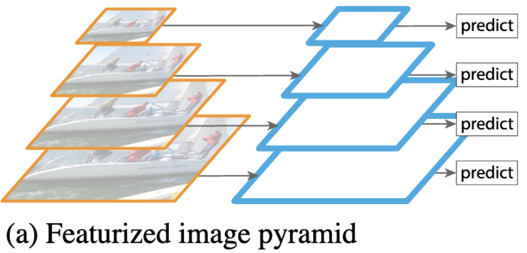
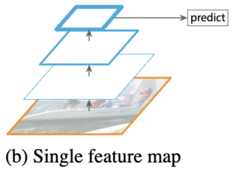
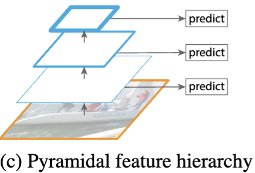
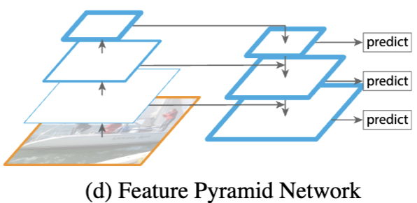

比赛应用场景
MTCNN 的速度更快，优先使用 MTCNN 进行检测，对于采帧数量不够的视频再使用准确率和鲁棒性更强的 RetinaFace 检测，若仍然不够，则对成功识别的帧进行过采样。
RetinaFace由于 FPN 结构的存在，对于小尺寸和大尺寸的人脸检测准确率更高。
MTCNN( Joint Face Detection and Alignment using Multi-task Cascaded Convolutional Networks)
引言
多任务卷积神经网络（Multi-task convolutional neural network，MTCNN），将人脸检测和人脸关键点检测集成在一个模型中实现。
如上图所示，MTCNN 总体可分为 P-Net、R-Net 和 O-Net 三层网络。该模型采用候选框+分类器的思想，同时兼顾速度与精度，实现高效的人脸检测。
滑动窗口
MTCNN中使用了滑动窗口的思想，利用卷积核的滑动方式，对图像进行多次提取。在MTCNN中，滑动窗口是一个Kernel_size=12，Stride=1的卷积核。但在面对被检测物体大小远大于或远小于卷积核大小时，需要用到图像金字塔，在指定缩放比例（论文中为0.7）以及最小图片尺寸后，将原图设置为图像金字塔底层，然后逐层缩放，在图像金字塔的每一层都用滑动窗口扫描，这样就能对各个位置、各个尺寸的物体进行识别。
MTCNN网络结构
MTCNN 的三层网络结构分别是快速生成候选窗口的 P-Net、进行高精度候选窗口过滤选择的 R-Net 和生成最终边界框与人脸关键点的 O-Net。利用低复杂度的模型快速生成候选框，再利用高复杂度的模型对候选框进行筛选，以此实现速度与精度的共同提升。
候选网络（Proposal Network, P-Net）
如上图（“MP 表示 max pooling”，图中应为 1$2\times2$），P-Net 输入为$(12\times 12\times 3)$的特征图，经过卷积网络得到$(1\times1\times32)$的特征图，然后通过3个$(1\times1)$卷积得到人脸分类、回归候选框（bounding box 的四个坐标偏移量）和人脸特征点坐标（5 个特征点的 x,y 坐标）。
原图经过图像金字塔处理后，逐层输入到 P-Net 中，获取候选框后还原至原图大小，进行边框回归（bounding box regression），并利用NMS进行窗口过滤，得到 P-Net 的最终输出。
精炼网络（Refinement Network, R-Net）
R-Net 对候选框进行精筛。R-Net 的输入尺寸为$(24\times24\times3)$，经过卷积及最大池化后将特征图形状变为 $(3\times3\times64)$，经过flatten和全连接层后得到长度为 128 的向量，再用三个全连接层分别输出人脸分类、边框和特征点信息。
输出网络（Output Network, O-Net）
O-Net 输入为$(48\times48\times3)$，数据处理流程和 R-Net 一样， R-Net 和 O-Net 都起到一个对 P-Net 的输出结构进行精筛的作用。
损失函数
MTCNN 的损失函数为： $$ \mathcal{L}_{MTCNN}=\alpha\mathcal{L}^{det}+\beta\mathcal{L}^{box}+\gamma\mathcal{L}^{landmark} $$
其中 $\mathcal{L}^{det}$ 为人脸分类损失，使用交叉熵损失函数：
$$ \mathcal{L}_i^{det}=-\sum_{i}^{N}{(y_i\cdot\log(\hat{y}_i)+(1-y_i)\cdot\log(1-\hat{y}_i))} $$
$\mathcal{L}^{box}$ 计算欧氏距离作为边框回归损失函数： $$ \mathcal{L}_i^{box}=||\hat{y}_i^{box}-y_i^{box}||_2^2 $$
$\mathcal{L}^{landmark}$ 为人脸特征点坐标损失，使用欧氏距离 $$ \mathcal{L}_i^{landmark}=||\hat{y}_i^{landmark}-y_i^{landmark}||^2_2 $$ 在 P、R、O 网络中，三个损失函数的超参数取值有所不同：
- P-Net: $\alpha:\beta:\gamma=1:0.5:0.5$
- R-Net: $\alpha:\beta:\gamma=1:0.5:0.5$
- O-Net: $\alpha:\beta:\gamma=1:0.5:1$
Hard Sample mining
在训练时，对分类损失进行 Hard Sample mining。在一个batch里，取分类损失最大的前 70% 进行反向传播。不对回归做难样本挖掘是因为回归问题即使是微小的修正都是有用的，但二分类则不然。
样本选择与训练
在 MTCNN中 的 P、R、O 网络都要同时预测是否为人脸和预测人脸框，在训练时使用以下4类数据样本进行训练：
- Negatives: 与 GT $\text{IoU} < 0.3$;
- Positives: $\text{IoU}>0.65$;
- Part Faces: $0.4<\text{IoU}<0.65$;
- Landmark Faces: 带有5个特征点标签的图片
这4类数据的数据量比例大概为3:1:1:2，不同类型的数据将用于训练不同的分类或回归网络：
- 人脸分类：Negatives + Positives; 正样本和负样本易区分，容易使模型收敛；
- 人脸边框回归：Positive + Part Faces; 负样本中几乎没有人脸，无法训练人脸框；
- 人脸特征点：Landmark Faces.
在生成训练数据的时候，先从原始数据集的真实人脸框周围随机生成切片（crop patches），根据其与 GT 的 IoU，切图并划分正样本（Positives）、负样本（Negatives）、部分样本（Part Faces）三类数据集，并结合原始数据集中的 GT 和人脸特征点（Landmark Faces）进行切图，获取 Landmark Faces 类数据。而后将所有数据的尺寸修改到 P、R、O 三个网络的输入尺寸。
在训练过程中应该优先训练 P-Net，再训练 R-Net 和 O-Net 时，可直接使用 P-Net 的预测结果与 GT 人脸框做 IoU，来生成 Positives、 Negatives、 Part Faces 三类数据，这样更符合模型的真实预测情景，有助于提高模型在实际应用场景中的精度。
Pytorch 实现
P-Net
import torch
import torch.nn as nn
import torch.nn.functional as F
class PNet(nn.Module):
def __init__(self):
super(PNet, self).__init__()
self.conv_layer = nn.Sequential(
nn.Conv2d(3, 10, kernel_size=3, stride=1), # padding='valid' 不填充
nn.PReLU(),
nn.MaxPool2d(kernel_size=2, stride=2), # padding='same' 填充
nn.Conv2d(10, 16, kernel_size=3, stride=1), # padding='valid'
nn.PReLU(),
nn.Conv2d(16, 32, kernel_size=3, stride=1), # padding='valid'
nn.PReLU()
)
self.conv4_1 = nn.Conv2d(32, 1, kernel_size=1, stride=1)
self.conv4_2 = nn.Conv2d(32, 4, kernel_size=1, stride=1)
self.conv4_3 = nn.Conv2d(32, 10, kernel_size=1, stride=1)
def forward(self, x):
x = self.conv_layer(x)
cond = F.sigmoid(self.conv4_1(x))
box_offset = self.conv4_2(x)
land_offset = self.conv4_3(x)
return cond, box_offset, land_offset
R-Net
import torch
import torch.nn as nn
import torch.nn.functional as F
class RNet(nn.Module):
def __init__(self):
super(RNet, self).__init__()
self.conv_layer = nn.Sequential(
nn.Conv2d(3, 28, kernel_size=3, stride=1),
nn.PReLU(),
nn.MaxPool2d(kernel_size=3, stride=2, padding=1),
nn.Conv2d(28, 48, kernel_size=3, stride=1),
nn.PReLU(),
nn.MaxPool2d(kernel_size=3, stride=2),
nn.Conv2d(48, 64, kernel_size=2, stride=1),
nn.PReLU()
)
self.line1 = nn.Sequential(
nn.Linear(64 * 3 * 3, 128),
nn.PReLU()
)
self.line2_1 = nn.Linear(128, 1)
self.line2_2 = nn.Linear(128, 4)
self.line2_3 = nn.Linear(128, 10)
def forward(self, x):
x = self.conv_layer(x)
x = x.view(x.size(0), -1)
x = self.line1(x)
label = F.sigmoid(self.line2_1(x))
box_offset = self.line2_2(x)
land_offset = self.line2_3(x)
return label, box_offset, land_offset
O-Net
import torch
import torch.nn as nn
import torch.nn.functional as F
class ONet(nn.Module):
def __init__(self):
super(ONet, self).__init__()
self.conv_layer = nn.Sequential(
nn.Conv2d(3, 32, kernel_size=3, stride=1),
nn.PReLU(),
nn.MaxPool2d(kernel_size=2, stride=2, padding=1),
nn.Conv2d(32, 64, kernel_size=3, stride=1),
nn.PReLU(),
nn.MaxPool2d(kernel_size=3, stride=2),
nn.Conv2d(64, 64, kernel_size=3, stride=1),
nn.PReLU(),
nn.MaxPool2d(kernel_size=2, stride=2),
nn.Conv2d(64, 128, kernel_size=2, stride=1),
nn.PReLU()
)
self.line1 = nn.Sequential(
nn.Linear(128 * 3 * 3, 256),
nn.PReLU()
)
self.line2_1 = nn.Linear(256, 1)
self.line2_2 = nn.Linear(256, 4)
self.line2_3 = nn.Linear(256, 10)
def forward(self, x):
x = self.pre_layer(x)
x = x.view(x.size(0), -1)
x = self.conv5(x)
x = self.prelu5(x)
label = F.sigmoid(self.line2_1(x))
box_offset = self.line2_2(x)
land_offset = self.line2_3(x)
return label, box_offset, land_offset
RetinaFace: Single-shot Multi-level Face Localisation in the Wild
主要贡献
- 在 WIDER FACE 上添加 landmark 标注，在 hard face 上检测显著改善；
- 在已有的监督分支上添加 mesh decoder 分支，预测像素级 3D 人脸信息；
- 在 WIDER FACE 的 hard 级别的测试集中，RetinaFace 超出 SOTA 1.1%；
- 在 IJB-C 测试集中，RetinaFace 使 Arcface 人脸识别中的结果得到提升
- 采用轻量级的 backbone，RetinaFace 能在单CPU上实时运行 VGA 分辨率（320*240）的图像
Multi-task Loss
$$ \begin{align*} \mathcal{L}&=\mathcal{L}_{cls}(p_i,p_i^*)+\lambda_1p_i^*\mathcal{L}_{box}(t_i,t_i^*)\\ &+\lambda_2p_i^*\mathcal{L}_{pts}(l_i,l_i^*)+\lambda_3p_i^*\mathcal{L}_{mesh}(v_i,v_i^*) \end{align*} $$
$\mathcal{L}_{cls}$ 为分类损失，$\mathcal{L}_{box}$ 表示 bbox 回归损失，$\mathcal{L}_{pts}$ 表示面部标志点回归损失，$\mathcal{L}_{mesh}$ 为三维重建损失。
特征金字塔（Feature Pyramid Networks，FPN）
为了能检测出图像中不同尺寸大小的目标，有以下几种图像算法：
-
特征图像金字塔（Featurized image pyramid）：
生成不同尺寸的图片，每张图片生成各自尺寸的特征图，分别进行预测，最后统计所有尺寸的预测结果。
 -
单一特征图（Single feature map）
使用深度神级网络的某一层 feature map 进行预测。靠近网络输入层的特征图包含粗略位置信息，使得目标 bbox 位置不准确；靠近最后一层的特征图会忽略微小物体信息。
 -
金字塔特征层（Pyramidal feature hierarchy）
使用不同层次的金字塔层feature map进行预测。
 -
特征金字塔网络（Feature Pyramid Network）
对深层特征进行上采样，再与对应层特征进行融合，得到高分辨率、强语义的特征，加强了对特征的提取。
核心思想：把深层语义传递回浅层，补充浅层的语义信息，从而特到高分辨率和强语义的特征，有利于小目标的检测。
特征融合
特征融合的流程是，深层特征图经过上采样，浅层特征图经过$1\times1$卷积对齐通道，两者相加。